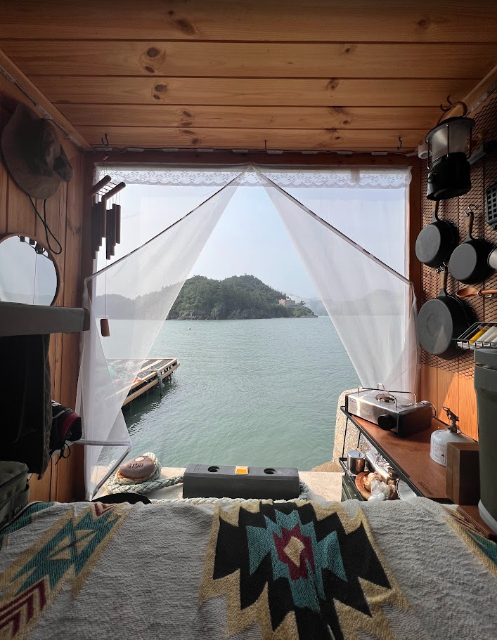
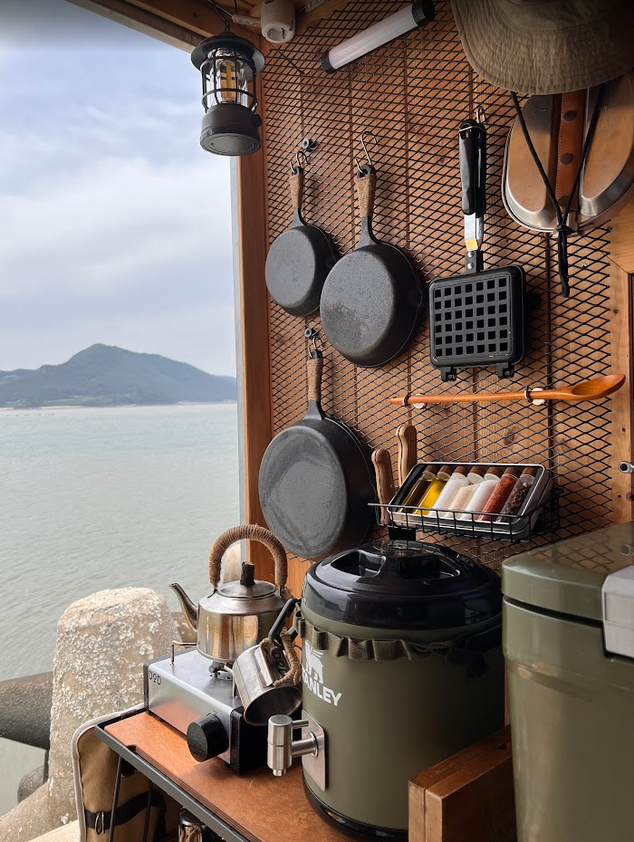
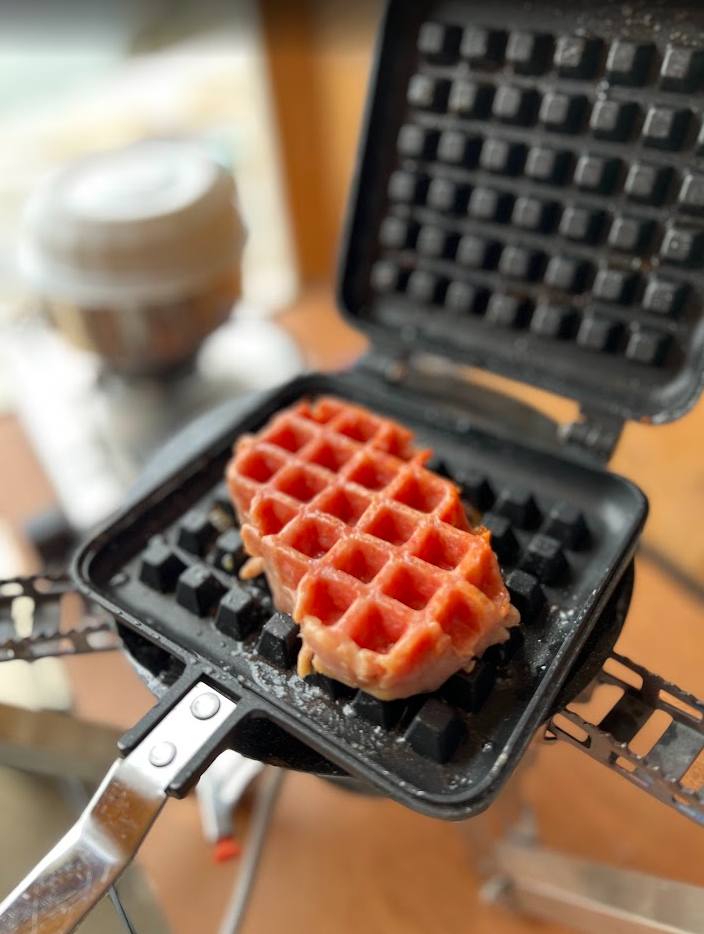
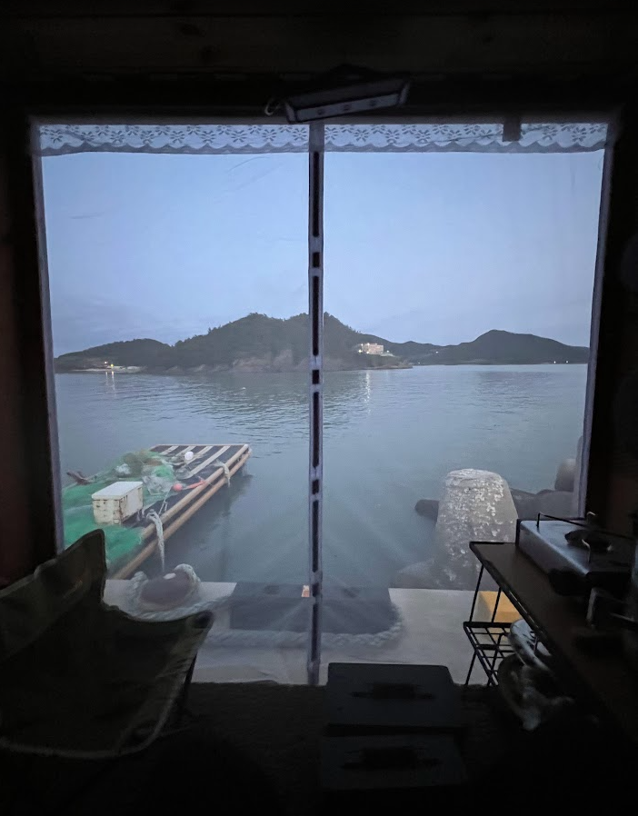
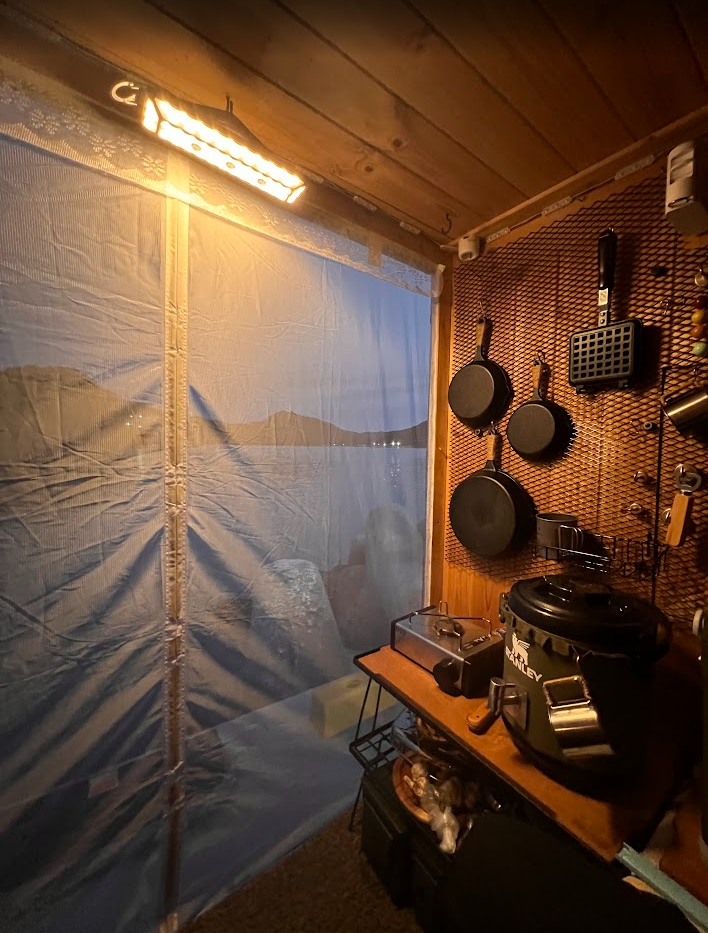
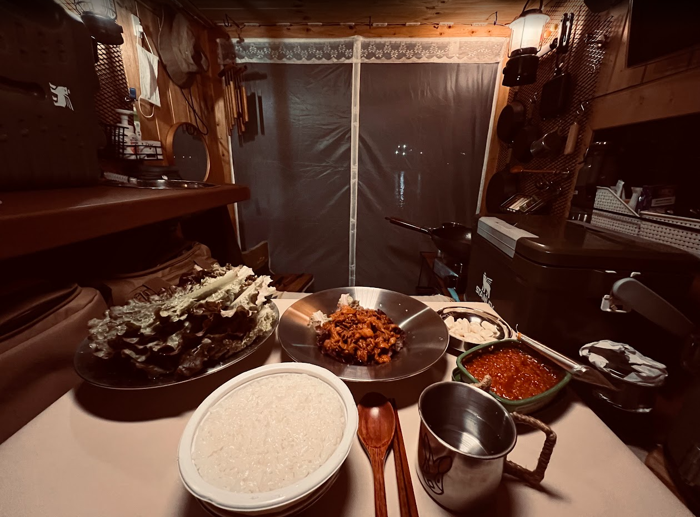

|




모기가 졸라 많다.

|




모기가 졸라 많다.
난 주물팬은 안쓰고 카본스틸팬 쓰는데, 캠핑에서 쓰고 나면 시즈닝이 다 뜯어지더라고. 주물팬은 무거워서 손이 안가고
영화도 아닌데 미장센이 좋다
오 아직 미완성인데 내가 의도하고 만든 100% 내 공간안에 있는 거 좋아함. 스틸컷 처럼 그 장소를 찍는거 좋아함.
그럼 유튜브 대신 인스타에 취미로 몇장 올릴만 하겠다. 작품같아ㅇㅇ
아마 저런식으로 몇번씩 해내고 인스타에 올리다보면 잡지사에서 사진 써도 되냐, 인터뷰 되냐 물어볼지도?
ㄹㅇ 감각적이네
낭만

탑차로 만든건가
이거맞다
좋네 우리동네오면 연락해
뭐야 무서웡
검사나 승인 같은거 안받아도됨? 나도 개조하고 싶은데 무게 재고 하는거 존나 귀찮아 보여서 꿈만 품고있는데
요새 캠핑카 개조하는거 되게 유연해졌음. 구조변경도 공뭔이랑 잘 말해서 하면 됨. 뭐 근데 첨에 간단히 받고 좀 추가도 하고 그럼 ㅋㅋ 자동차 검사는 잘 안해줄라고 하는데 해주는곳 뚫어놓으면 댐.
그렇구나 그나저나 대박이네 200만원 짜리 깡통차를 어디서 구했뇨
아버지가 캠핑카 만들라고 가지고 계시던거 돌아가셔서 내가 물려받아 만듦.
아 그랬구나 아버지의 선물이구나 좋은곳으로 가셨을거야
결과를 이뤄낸거보니 부럽다 나도 진짜 해봐야지 답변 고맙고 무사고 차박여행해!
김치와플전임? 설거지는 좆같았지만 존맛이긴 했는데
저거 스팸임
더맛나겠네
존맛이긴함 ㅋㅋㅋ
캬 천재적인 조리법이다 스팸와플 ㅋㅋㅋㅋ
갬성 지린다 자주 올려주라 개추
갈때마다 올릴/깽 ㅋㅋㅋㅋ

낭만 있네 앞으로도 개붕이 짤 기대할게
차박은 사용한 식기류들 집에 가서 설거지 하는거야?
궁금한게 과속 방지턱 넘으면 철렁 할거 같은데 이건 다 수납하남?
노마드션 캠핑카보다 낫다
낭만 지리네 부럽다
몇살임?
낭만 ㅈ댄다 개부럽다 진심
주물팬 관리 생각보다 쉬움. 그냥 음식하고 기름만 잘 맥여 놓으면 됨. 계란 후라이해도 코팅팬 같이 안 붙음. 김치로 코팅 녹아나는건 쇠수세미로 문대야댐. 그러고 다시 기름맥여놈.